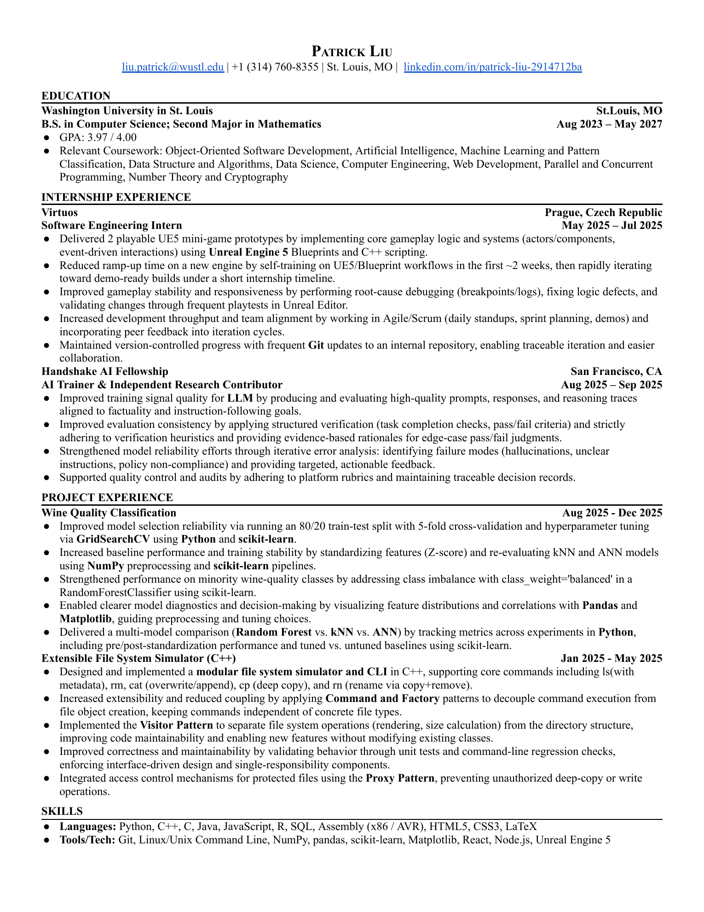

Prague, Czech Republic
Virtuos
Software Engineering Intern
Built two Unreal Engine 5 gameplay prototypes while rapidly learning Blueprints, C++, debugging, and Agile development workflows.
Resume
Prague, Czech Republic
Software Engineering Intern
Built two Unreal Engine 5 gameplay prototypes while rapidly learning Blueprints, C++, debugging, and Agile development workflows.
San Francisco, CA
AI Trainer & Independent Research Contributor
Improved LLM evaluation quality by creating and reviewing prompts, reasoning traces, verification tasks, and evidence-based model assessments.
Eugene, Oregon
Engineering Intern
Contributing to Unity and C# development for a live multiplayer game through feature implementation, debugging, and production maintenance.
